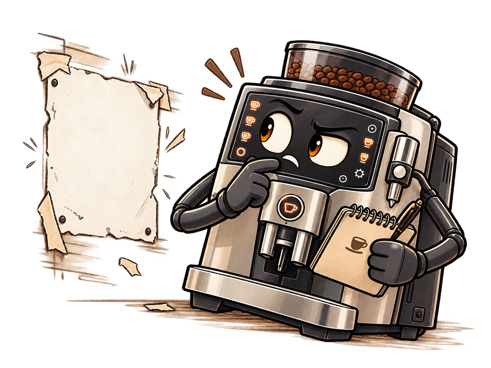

Test It With a Reader
We will use editorial feedback to revise digital work so that our message is clearer and more effective for its audience.
★ PRIORITY TEKS · What I need to master
7.3(B) · Design and improve: Plan, choose digital tools, test and refine a prototype through trial and error.
7.8(B) · Revise with feedback: Create and revise communication using feedback and respectful digital etiquette.
7.7 · Communicate for an audience: Use digital tools to present information clearly for an intended purpose and audience.
Student-friendly descriptions of Texas Technology Applications TEKS §126.18(c)(3)(B), (8)(B), and (7).

✦ Warm-Up · 5 minutes
Two readers try a draft. Reader A says, 'I like the picture, but the words are too small for me to read.' Reader B says, 'I like the colors, but I could not tell where to start reading.' Both comments are specific: one points to text size; the other points to reading order. Compare what each publisher could test next. Then answer Question #1 below.
TEKS CHECK · 7.8(B) · respectful, actionable feedback
QUESTION #1
Choose ONE reader comment above. Write a specific editorial note identifying the problem and proposing a change. Explain how a new reader could show whether it helped.
Extra Help — Think it through
Point to something a designer could actually investigate.
✎ Learn · From Manuscript to Publication
A description of what someone actually notices: 'I reread line three twice' is usable evidence; 'bad page' does not identify a problem.
A writer creates a manuscript (draft); an editor reads it and makes suggestions; the author considers those notes and revises; the publisher prepares the final work for an audience. Editing matters in books, websites, journalism, films, and video games.
Revision improves organization, meaning, and structure. Copyediting improves grammar, clarity and consistency. Proofreading checks final typos. The author may accept, adapt or reject suggestions, and should explain the choice.
Editors once marked up paper proofs by hand. Today they often use shared documents with comments and suggested edits. Freelance editors and editorial services can review manuscripts before publication. AI tools can suggest quick revisions, but may change an author's voice or introduce inaccuracies: people must verify suggestions and protect private writing.
Priority TEKS in action: 7.3(B) design-process testing; 7.8(B) respectful revision through feedback; 7.7 communicating for an audience
↗ Practice · Together, 2 minutes
Look at the two comments below. With Mr G, turn 'The page looks bad' into ONE question that asks about a reader's observable experience. Do not change your book yet; this is a one-minute practice for a better test prompt.
“The page looks bad.”
“I lost my place when the text jumped across the page.”
▣ Perform · Keep Building Your Book
- Choose three pages. Open your continuing Slides book. Pick THREE consecutive story pages for a partner to read. Your book is still a prototype, not a final publication.
- Invite useful evidence. Let your table partner read them without coaching or changing your file. Ask, 'Where did you begin reading? Where did you hesitate? What did you expect next?' Observe what happens. If the partner is unavailable, independently trace the pages as a new reader and record which transition you would test later.
✎ Learn · Responding to Editorial Notes
Respond, test, decide. Editorial feedback is a suggestion, not a command. Authors can accept, adapt, or reject advice. A reader test can check whether a proposed change solves an actual communication problem.
TEKS CHECK · 7.8(B) · revising communication from evidence
QUESTION #2
A manuscript says, “The key vanished. Suddenly, the door opened. The travelers cheered.” An editor only writes, “This is confusing.” Write a more useful editorial note that identifies ONE gap in the scene and recommends a specific revision. Explain how your suggestion helps the reader without writing the story for the author.
Extra Help — Think it through
Helpful feedback identifies where a reader struggles and a way to investigate without taking the author's choices away.
▣ Perform · Test Your Idea
- Keep a brief test log. On a new planning slide at the end of your book, record Page, What the reader noticed, My decision, and Why. Use your own thinking.
- Revise deliberately. Improve at least ONE page—or test another idea and explain why you did not use the original suggestion. Retain earlier work on a copy when useful.
- Set up next week. Choose the most important unfinished aspect of the book: readability, order, pictures, credits or cover. We continue this same project; don't start over.
TEKS CHECK · 7.3(B) · evaluating tools and revising thoughtfully
QUESTION #3
An AI editing tool suggests replacing an author's unusual but meaningful phrase with simpler words. Explain one benefit and one risk of accepting the suggestion. Who should decide, and why?
Extra Help — Think it through
Think about clarity, accuracy, author voice, and responsibility for AI-generated suggestions.
✎ Learn · What Should an Editor Cut?
Editing is a judgment, not an automatic deletion. A paragraph may slow a story while also revealing a character’s motivation, memory, or personality. An author can accept a cut, adapt the passage by shortening or moving it, or reject the suggestion. Compare what the reader gains and loses, then justify the decision with details from the manuscript and the editor’s note.
TEKS CHECK · 7.3(B) + 7.7 · justify revisions for an audience
QUESTION #4
Read the draft and editor's note. If you were the author, would you accept, adapt, or reject the suggestion to cut the highlighted paragraph? Explain your decision using specific details from the story and the editor's concern.
At the old train station, Mina hesitated when she saw the dark tunnel.
She rubbed the worn brass button on her coat. Her grandfather had sewn it there before his last journey, telling her, “When you feel lost, remember where you came from.” Mina pressed the button whenever she needed courage.
She took a breath, lifted her lantern, and stepped into the tunnel.
Extra Help — Think it through
Notice what the button and grandfather's words tell you about Mina, and why the editor thinks the paragraph slows the action. You may keep it, shorten or move it, or cut it—but support your choice with evidence from both the excerpt and the note.
Before you enter Creative Labs
🌡 TEKS Temperature Check
Forge: “OMG, you are a coffee machine, not an employee! You can't get sick! You don't have days off ... that's it, I'm rigging Onion with a coffee maker plugin!”
Onion.exe freezes with the expression of a cat that has just overheard the veterinarian discussing surgery.
Onion.exe: “Bleep?”
Quick end-of-class survey: Look back at today's three Priority TEKS. Tell Mr G whether this Learning Guide actually helped you learn each skill. What remains confusing, unanswered, or in need of another example?
- 7.3(B) — Design and improve: Did this guide help you understand how testing and revising can improve a design?
- 7.8(B) — Feedback and revision: Did it teach you how to offer and use specific, respectful editorial feedback?
- 7.7 — Audience and communication: Did it help you understand how digital publications communicate for their audience?
By the end of class, use the Creative Lab Progress Log button below to report which TEKS felt well taught, which need more instruction, and any unanswered questions you want us to address in future Learning Guides. You may also mention an experiment you tried.
Creative Lab Progress Log
Which of today’s Priority TEKS did this Learning Guide teach clearly? Which TEKS need more explanation or practice? Write any unanswered questions for Mr G. You can also share an experiment or revision you tried.
This is an optional, ungraded learning check-in. Your questions help Mr G plan future lessons. Creative Labs have no finish line.
OPEN PROGRESS LOG ↗✦ Creative Labs · Keep Exploring
After your four completion checks, choose any experiment. Creative Labs are optional, open-ended and ungraded; keep exploring as long as you have time. Work on copies to protect your original book. There is no one right outcome or finish line.
Another Opening
Try this optional experiment at your own pace.
- Duplicate two beginning slides before changing them.
- Move the title, opening text, or page division on the copies.
- Read both versions. Which creates curiosity or clarity?
- Choose what to keep, or preserve both prototypes.
Mini Trailer
Try this optional experiment at your own pace.
- Ask for scratch paper and draw three panels.
- Sketch a character or place, a mystery or problem, and an invitation to read.
- Add short optional captions without revealing the ending.
- Show your draft and decide what to revise independently.
Creative Feedback
Try this optional experiment at your own pace.
- Pick one unfinished story page and name what you want feedback about.
- Ask a partner where their attention goes first or what feels unclear.
- Make one experiment on a copied slide.
- Compare the versions and decide for yourself which idea to keep.
Cover Prototype Two
Try this optional experiment at your own pace.
- Duplicate the cover to protect your original.
- Change the title placement, font size, or picture area on the copy.
- View both covers at normal reading size.
- Compare their effect and keep one, both, or neither.
A little office nonsense.
Joey: “The reader test is finished.”
Forge: “And?”
Joey: “The reader ate page three.”
Pixel licks the paper. Onion.exe blinks.
Onion.exe: “Bleep. Bloop.”
Percival.12: “Page three needs revision.”
Pixel is a curious ferret who explores everything, especially what should be left alone. Onion.exe is a robotic cat who communicates in bleeps and bloops. Percival is the sentient office espresso machine and the only one who understands both pets.
Continue experimenting whenever you have completed your required work. The TEKS Temperature Check and Progress Log above are available even if you do not enter Creative Labs.